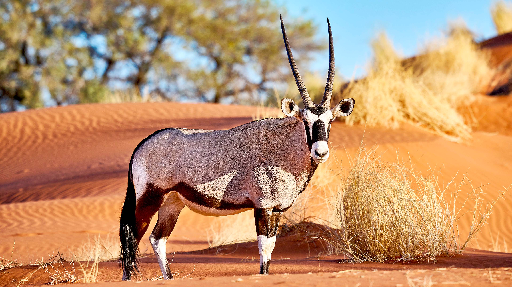

National geography
Antelope

Atelope is one of rarest species in the world.Antelopes are agile, hollow-horned ruminant mammals in the family Bovidae, native primarily to Africa and Asia. Not a single taxonomic group, they comprise over 90 species—ranging from the tiny royal antelope to the massive giant eland—that are closely related to goats and cattle. They are known for their slender legs, speed, and permanent hornTiger
 tiger.
tiger.
| animal | speed |
|---|---|
| Atelope | 35_56kmph |
| tiger | 48_65kmph |
| rhino | 30_45kmph |